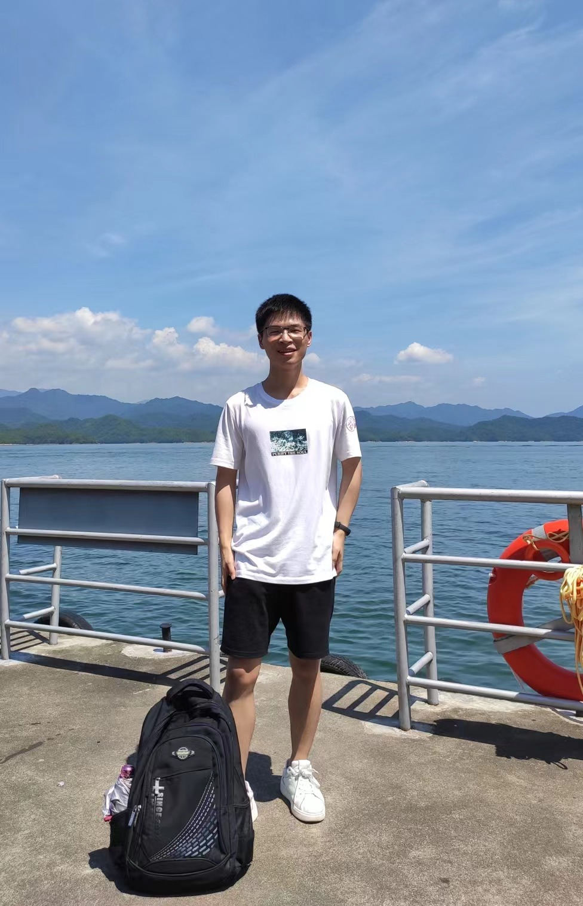

|
Jinxin Liu
I am currently a joint Ph.D. student of Zhejiang University and Westlake University, advised by Dr.
Donglin Wang. Also, I am a member of Machine Intelligence
Laboratory (MiLAB) in Westlake University, where I do my research work on deep reinforcement
learning and robot learning. Before coming to Westlake University, I obtained my bachelor's degree of
Engineering from Chongqing University of Posts and Telecommunications, majoring in Communication
Engineering.
My main research goal is to develop algorithms which enable robotic systems to learn how to perform
complex tasks in a variety of unstructured environments. To that end, I work towards building deep
reinforcement learning algorithms that can learn in the real world. Recently, I have been specifically
focusing on the problems of 1) unsupervised reinforcement learning, 2) transition dynamics adaptation,
3) offline reinforcement learning for quadruped robots in real world.
Email /
CV /
GitHub /
Google
Scholar
|

|